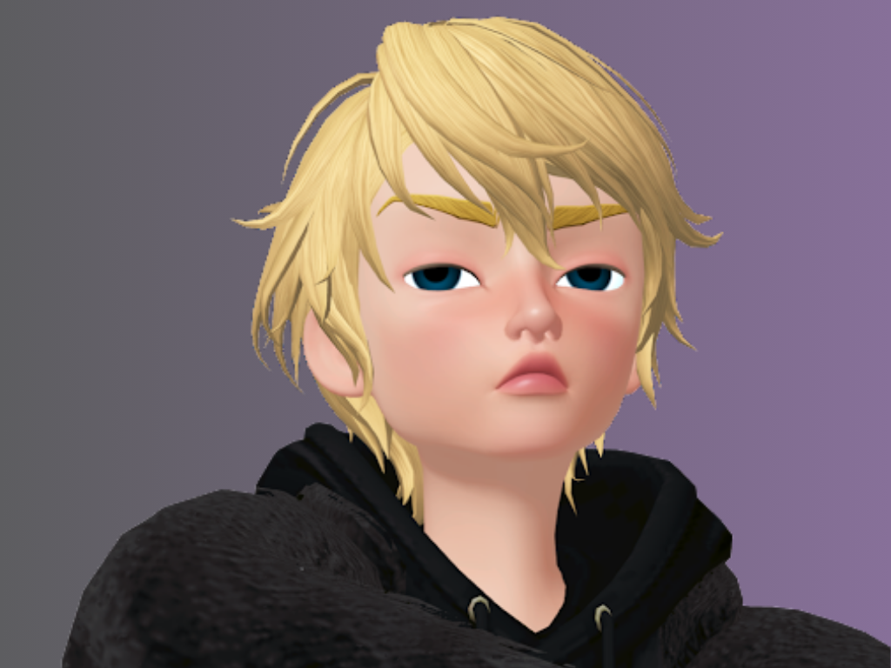

"Unspoken Longings": O EP de Estreia de Diego
Diego, o mais recente talento a se juntar à nossa gravadora, está prestes a lançar seu tão aguardado EP de estreia, intitulado "Unspoken Longings".
Com uma abordagem musical sem rótulos, Diego traz uma mistura única de influências e experiências para sua música, criando um som que é ao mesmo tempo autêntico e cativante.
"Unspoken Longings" promete ser uma jornada emocionante através das experiências e reflexões de Diego, explorando temas universais de amor, perda e autodescoberta.
Prepare-se para se envolver com as letras profundas e as melodias envolventes de Diego, enquanto ele nos leva em uma viagem sonora que é ao mesmo tempo íntima e universal.
Fique ligado para o lançamento de "Unspoken Longings" e descubra por que Diego está pronto para deixar uma marca indelével na cena musical.
Para mais atualizações e conteúdo exclusivo, siga Diego nas redes sociais:
Instagram Youtube